StreamSets is a data integration platform for the modern data ecosystem, empowering data engineers to build, run, monitor, and manage smart data pipelines in one place. Transformer for Snowflake is a fully hosted service embedded within the StreamSets DataOps Platform. It uses the Snowpark Client Libraries to generate SnowSQL queries that are executed natively in Snowflake, allowing your data to remain in your Snowflake Data Cloud.
Transformer for Snowflake is just one part of the StreamSets DataOps Platform, which consists of:
- Control Hub - to manage and monitor smart data pipelines at scale, providing real time visibility into operations.
- Data Collector - designed for streaming, CDC and batch ingest.
- Transformer - a family of engines to do heavy duty transformation ETL, ELT and ML work, executing natively on modern data platforms such as Snowflake and Spark.
Data Collector and Transformer (for Spark) engines can be deployed on-premises (VM or containers), in a customer's VPC, and/or in the customer's namespace in a public cloud. The engines, and therefore the data accessed by the engines, remains in the customer's environments across all of their on-prem, hybrid, & multi-cloud environments.
This lab shows you how to get started using Transformer for Snowflake as a part of the DataOps Platform. You can read more about pipelines in Transformer for Snowflake here.
Prerequisites
- A trial Snowflake account with
ACCOUNTADMINprivileges.- It is recommended to create a new trial account for this lab, using an email address that is not tied to an existing a StreamSets organization.
- [optional] Download the sql used in this lab here. Individual SQL statements are provided to copy/paste throughout the lab.
What You'll Learn
You will learn how to build pipelines using Transformer for Snowflake that are executed natively in your Snowflake Data Cloud, including:
- How to use Partner Connect to create a StreamSets Organization.
- How to create pipelines that dynamically generate your SQL queries at pipeline runtime.
- How to leverage User Defined Functions within your pipelines.
- How to use Fragments to share logic across multiple pipelines.
- How to create and run Jobs to control pipeline execution.
- How to use the Slowly Changing Dimension processor.
What You'll Build
The lab uses the TPCH_SF1 dataset pre-populated in your Snowflake account to transform raw retail data into consumable orders information that can support business analytics, including:
- A pipeline that renames columns, joins data, performs calculations, resuses portions of existing pipelines, and reshapes the data to populate multiple tables with raw data, summary data, and pivoted data.
- A pipeline to process a Slowly Changing Dimension.
What does it do?
Transformer for Snowflake accelerates the development of data pipelines by going beyond the construction of basic SQL with a drag and drop UI. Snowpark enables StreamSets to construct the SnowSQL queries at the pipeline runtime, allowing pipeline definitions to be more flexible than static SnowSQL queries. StreamSets also provides processors that combine the logic for common use cases into a single element to drop on your canvas.
How does it work?
Transformer for Snowflake is a hosted service embedded within the StreamSets DataOps Platform. It uses the Snowpark Client Libraries to generate SnowSQL queries that are executed in Snowflake. How does that happen?
- You build pipelines in the StreamSets design canvas.
- Upon pipeilne execution, StreamSets builds a Directed Acyclic Graph (DAG).
- StreamSets uses the DAG and the Snowpark Client Libraries to generate SnowSQL.
- StreamSets sends the SnowSQL to Snowflake.
- Snowflake executes the SnowSQL in the Warehouse of your choice.

Create Snowflake Trial Account
- If you haven't already, create a Snowflake trial Account using this link.
- Fill out the form and click Continue.
- Choose a Snowflake edition, cloud provider, and region for that provider. For the purposes of this lab, any of the providers or editions are fine to select.
- After checking the box to agree to the terms, click Get Started.
- Check your email inbox for a message from Snowflake that contains the link to Activate your trial. Click that link.
- Specify your username and password, and be sure to save these somewhere secure.
- You can find a detailed walk through of the Snowflake UI here. This lab will use the Snowsight UI (new Snowflake UI) exclusively and all instructions for the following steps in Snowflake are for that UI. You can use the Classic UI, but the Snowflake resources will be located in different places.
Confirm Existence of Sample Data
- This lab utilizes the
SNOWFLAKE_SAMPLE_DATABASEthat is included by default as a part of Snowflake accounts.- Select the Worksheet tab on the left-hand menu, and then click the blue
+ Worksheetbutton in the top right of the screen.
- With the new worksheet open:
- Click on the Databases tab on the left-hand menu.
- You should see the SNOWFLAKE_SAMPLE_DATA database in the list of objects.

- If SNOWFLAKE_SAMPLE_DATA is present, proceed on to the next section, Use Partner Connect to Create a StreamSets Organization.
- Select the Worksheet tab on the left-hand menu, and then click the blue
If SNOWFLAKE_SAMPLE_DATA is not present:
- You may have removed it from your account. Run the following command in your worksheet to restore it:
CREATE OR REPLACE DATABASE SNOWFLAKE_SAMPLE_DATA FROM SHARE SFC_SAMPLES.SAMPLE_DATA; - You should now see the database as one of the objects. Click on SNOWFLAKE_SAMPLE_DATABASE to reveal the schemas it contains, including
TPCH_SF1, which will be used in this lab. You can click on TPCH_SF1 and then Tables to see the included tables. - In your worksheet, run the following query:
CREATE WAREHOUSE IF NOT EXISTS TRIAL_WH; USE WAREHOUSE TRIAL_WH; SELECT * FROM SNOWFLAKE_SAMPLE_DATA.TPCH_SF1.ORDERS LIMIT 10; - Snowflake requires a warehouse to execute most queries, which is why the SQL contains the command to create a warehouse (size
XSMALLby default). You can find out more about Snowflake warehouses in their documentation. - If the query returns results, you are ready to proceed! If not, check your query syntax to confirm it is correct.
- Now it's time to set up your StreamSets account!
We'll use Snowflake Partner Connect to set up a StreamSets organization that will auto-populate Snowflake Credentials and Snowflake Pipeline Default Settings so you can start building pipelines right away.
Note: All steps assume you are using the SnowSight UI.
- After logging into your Snowflake Trial instance, look in the top left corner of the UI to confirm that your active role is ACCOUNTADMIN . If it is not:
- select the drop down next to your user name
- click on Switch Role
- select ACCOUNTADMIN

- On the left menu, expand the Admin section and select Partner Connect.
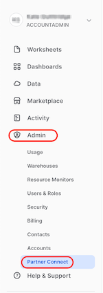
- Enter
StreamSetsin the search bar and click on the StreamSets tile.

- After selecting the StreamSets tile, the following window will appear. It contains information about the Database, Warehouse, User, Password and Role that will be created in Snowflake. Select Connect.

- A message will appear to indicate that the StreamSets account was created. Select Activate.

- Now you will be taken to StreamSets to finish setting up your StreamSets Organization. You can create a password for your Streamsets acccount or use Single Sign On through Google or Microsoft.

- Finish creating your StreamSets organization by choosing the region that is closest to you and updating the name, if you prefer. The default name uses the same prefix as your Snowflake Trial instance. Check the boxes to agree to the Terms of Service and acknowledge the Privacy Policy. Click on Agree & Continue.

- If the updated privacy policy message appears, go ahead and dismiss it.
- Now the dialog should appear asking about ingesting data into Snowflake. We do not need to do that because we are going to use data already loaded in the Snowflake Sample Database. Select Create Transformer for Snowflake Pipeline to be taken to the Pipeline Design Canvas.
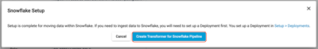
Congratulations! You now have your very own StreamSets Organization!
If you were not able to finish setting up your organization and navigated away, you can either:
- Go back and select StreamSets' partner connect tile in Snowflake, then select Launch.
- Use the link that was sent to the email address for your Snowflake account. Be sure to check your Spam folder if you don't see it.
Before we get started building a pipeline, let's look at how to navigate Control Hub, a web-based user interface (UI) for building, managing, and monitoring all of your pipelines. (Note: Control Hub displays timestamps using the browser time zone determined by your local operating system.)
The Control Hub UI includes the following general areas and icons. You can find more details in the documentation:
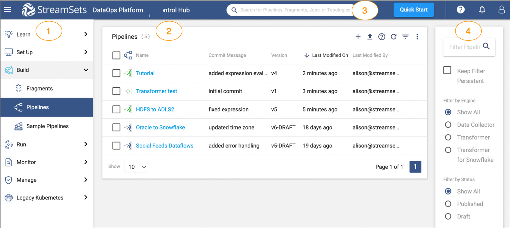
- Navigation panel: lists the areas that you can manage within Control Hub. Displays one of the following views based on your selection in the navigation panel:
- Learn: access tutorial steps and videos to help you get started with StreamSets.
- Set Up: create and manage environments, deployments, engines, and connections (Not applicable to Transformer for Snowflake)
- Build: design and manage fragments and pipelines.
- Run: create and manage job templates and instances, schedule tasks, and view draft runs.
- Monitor: access the operations and topologies dashboards and much more.
- Manage: administer your organizatio, create and manage users/groups, view audit entries to monitor logins and actions, and generate and manage credentials for use with the Control Hub REST API.
- View: displays one of the areas listed above based on your selection in the navigation panel.
- Global search: search for Control Hub objects by name, such as pipelines, fragments, and jobs.
- Filter: filter the information displayed in the selected view.
 Navigation panel icon - Toggles the display of the navigation panel.
Navigation panel icon - Toggles the display of the navigation panel.- My Account icon - Displays your account and browser settings. Allows you to invite other users to your organization or to sign out.
 Help icon - Provides access to the online help and shows help tips. Also provides documentation for the Control Hub REST API.
Help icon - Provides access to the online help and shows help tips. Also provides documentation for the Control Hub REST API.
The pipeline we build in this portion of the lab is based on the sample Sales data in the SNOWFLAKE_SAMPLE_DATA database. It contains tables with Orders and Order Line Items. We would like to be able to report from one table with a combination of the data from both tables. We are going to step through the pipeline build, noting some of the StreamSets features that make pipeline and development easier.
Start Building
- Using the tabs on the left, select Build > Pipelines. If there is already a My First Pipeline in the pipeline list, click on it and go ahead to the next step.

- If there is no pipeline listed:
- Click the plus (+) symbol to create a new pipeline.
- On the pop-up that appears, select Use Transformer for Snowflake. If you were creating a pipeline that used one of our other engines, you would need to Create a Deployment to set up those engines, but since we are using serverless Transformer for Snowflake, that is unnecessary.

- A new window will appear to create your pipeline.
- Give your pipeline a name and add a description (optional).
- Engine Type:
Transformer for Snowflakeis pre-selected - Select Next.

- If you wanted to share your pipeline with other users or groups in your Organization, this is where you would do that. For now, select Save & Open in Canvas.

- Now you will see the empty design canvas, with key items on the canvas explained in more detail below. Additional details about the pipeline canvas can be found here in the StreamSets documentation.

- 1 - Pipeline Canvas: Displays the pipeline and used to configure the pipeline data flow.
- 2 - Pipeline Creation Help Bar- Offers lists of stages to help complete the pipeline and can be used to connect a stage to an open node. You can also add a stage between linked stages by clicking the link between the two.
- 3 - Properties Panel: Displays the properties of the pipeline or selected stage when you configure a pipeline. Click on empty canvas space to see the properties of the entire pipeline.
- 4 - Selected stage pop-up menu - Displays the icons for commands that you can apply to the selected stages.
- 5 - Stage library panel - Used to add stages to the pipeline. You can drag a stage to a location on the canvas or click a stage to add it to the end of the pipeline.
- Click on any blank space in the canvas to view the pipeline properties in the panel below.
- On the General tab, there are 5 properties directly related to Snowflake. These are the Snowflake Account URL, Warehouse, Database, Schema, and Role. When your pipeline is executed, these properties are sent to Snowflake to determine what resources the pipeline uses to execute. As shown below, each of these is pre-populated with a StreamSets pipeline parameter. Those are written with the
${parameter_name}syntax.
- On the General tab, there are 5 properties directly related to Snowflake. These are the Snowflake Account URL, Warehouse, Database, Schema, and Role. When your pipeline is executed, these properties are sent to Snowflake to determine what resources the pipeline uses to execute. As shown below, each of these is pre-populated with a StreamSets pipeline parameter. Those are written with the

- Now select the Parameters tab. This is where you can see the values that each of these parameters are given. By default, the Database, Warehouse, and Role that your pipelines point to are the ones generated by the Partner Connect Integration. The pipeline settings also points to the
PUBLICschema.
Create a Source
This pipeline will use data prepopulated in the SNOWFLAKE_SAMPLE_DATA database, in schema TPCH_SF1. It will use data from the ORDERS and LINEITEM tables.

- Using the Pipeline Creation Help Bar, add a Snowflake Table Origin to the canvas. Next to Origin Missing, select
Snowflake Tablefrom the drop-down menu.

- Click on the new Origin if it is not already selected, and give it a meaningful name. Since this Origin will read the data from the
ORDERStable, name itOrders.

- On the Table tab of the properties panel, we will tell the pipeline where this table is located. Since the data we are reading is in a Read-Only database, that database cannot be the pipeline's default. In this case we need to override the database and schema. To do this, select Specify Database, which makes the options for the Database and Schema appear. Use the following values to configure this origin, and see the finished configuration in the image below:
- Database:
SNOWFLAKE_SAMPLE_DATA - Schema:
TPCH_SF1 - Table:
ORDERS
- Database:
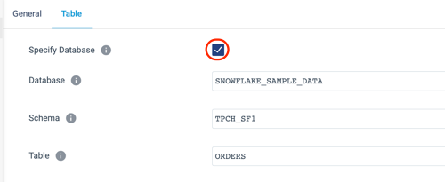
- The origin is created and configured, but note that there are some additional options further down on the Table tab. There is an option to limit the number of columns read from the table, add a where clause to filter down to a subset of the data read from the table, and the unique StreamSets feature to add a Preview clause. We'll talk more about this later.
- Now the canvas has one origin, which is showing the validation error VALIDATION 0011 Stage has open output streams, indicated by the yellow triangle.

- Transformer for Snowflake pipelines need to have a final destination, so as a temporary fix, add a Trash Destination.
- What is a Trash destination? It is a placeholder destination so you can preview pipeline processing as you develop the pipeline. No tables will be permanently written to Snowflake when this pipeline is executed or previewed.
- As when adding an origin, there are multiple ways to do this, but this time we are going to use the Stage Library Panel.
- If the library panel is not already expanded, click on the hamburger icon
 in the upper right corner of the canvas.
in the upper right corner of the canvas. - Enter
Trashin the search bar, and click on the stage. - Now a Trash destination stage should appear on the canvas.
- The canvas might be a little messy now, with stages not placed very logically, so let's Auto-Arrange it to clean it up. Above the canvas, on the right side is the Auto-Arrange icon. Click on it to rearrange the processors as shown below.


- Now we need to connect the source and destination to complete this first iteration of the pipeline. Select the Orders Origin and click on the output node icon. Draw a line to the input node icon on the Trash stage as shown below.

Preview the Pipeline
Now preview the pipeline results for the first time. Data Preview shows the input and output of each origin, processor, and destination. Find out more about Preview in the documentation.
- In order to preview the pipeline results, select the Preview icon (eye) located above the canvas on the right.
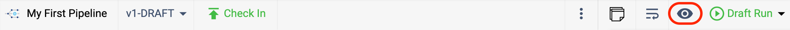
- A pop-up will now appear to configure previews. More details about preview configuration settings can be found here, but the important things to note are:
- Preview Batch Size: the number of records shown at each origin, processor, or destination.
- Write to Destinations: if a Snowflake table is the destination, selecting this option means that the pipeline would actually write only the previewed data to the target table(s).

- Click Run Preview.
- At this time, Transformer for Snowflake is using Snowpark to generate the queries for this pipeline, and sending them over to Snowflake. Keep in mind that if the specified warehouse is currently suspended, it may take an extra moment to generate the preview results while it is resumed.
- There may be updates about the status of the pipeline preview in the properties panel as shown below.

- When the preview is ready, a screen appears that looks similar to this:

- By default, the Orders origin stage is selected, and the properties window on the bottom shows 10 records from the ORDERS table, including the column name, data type, and value for every column in the record.
- To make it easier to read, switch the records to a table view by selecting the table icon above the records

- To close the preview and return back to the design mode, select Close Preview in the top right of the canvas.

Now let's start transforming the data. The immediate goal is create a table in Snowflake that joins the Order and Line Item data.
Begin Data Transformation by Renaming Columns
- The first step is to rename the columns read from the
ORDERStable. - The data preview showed that the Order column names all begin with O_. Let's clean the names up by removing that prefix.
- Make sure the preview is closed, and click on the arrow connecting the Orders origin and Trash destination.

- The Pipeline Creation Help Bar should appear after selecting the line connecting the two stages.
- On the drop-down menu, choose the Field Renamer processor.
- If the Pipeline Creation Help Bar does not appear:
- use the Stage Library Panel on the right, search for
Field Renamer, and click on it. This should add a Field Renamer processor to the canvas. - delete the connection between Orders and Trash
- connect Orders to the Field Renamer
- connect Field Renamer to Trash
- use the Stage Library Panel on the right, search for
- Now the pipeline should look like this:

- Open the Field Renamer processor by clicking on it. Its properties should appear below the canvas:

- Name the stage
Remove Column Name Prefixeson the General tab. - Select the Rename tab.
- Select the Rename Type drop down menu.
- There are multiple options here, and since we know that we want to remove the
O_prefix from all fields, selectRemove prefix from all fields. - Leave the Case Insensitive setting selected, so we can remove both upper and lower cased column names, and enter
O_for Remove String.

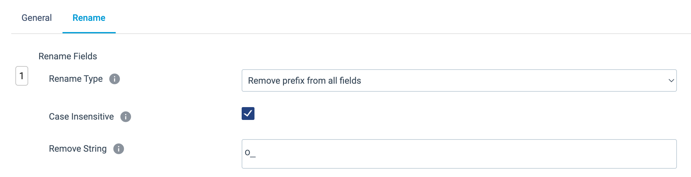
Write to a Snowflake Table
Now replace the Trash stage with a real destination in Snowflake.
- Click on the Trash stage and delete it using the trash can icon on the pop up menu.

- Select the Field Renamer [Remove Column Name Prefixes] processor, and the Pipeline Creation Help Bar should appear. Choose the
Select New Destination to connect...menu and chooseSnowflake Table.
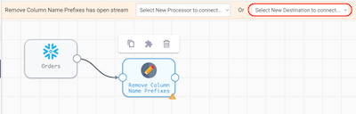
- With the new Snowflake Table destination selected update the following settings:
- General tab > Name:
Order Line Items - Table tab >
- Table:
ORDER_LINE_ITEMS - Write Mode:
Overwrite Table - Overwrite Mode*:
Drop Table - Create Table: ✓
- Table:
- General tab > Name:
- Preview the pipeline again by clicking on the preview icon above the canvas. When the Preview Configuration Window appears, change the Preview Batch Size to
1. - When the preview finishes processing, select the Field Renamer [Remove Column Name Prefixes] to see the results. All of the "O_" prefixes were removed from the column names. This is just one example of how Transformer for Snowflake pipelines dynamically generate SQL at pipeline runtime. The Apply Functions, Field Remover, Field Renamer, and Field Type Converter processors all allow you to dynamically specify column names based on patterns. This means that even as the data evolves over time, your pipelines won't break if a new column appears. For example, if a pipeline has an Apply Functions processor configured to trim all strings to remove extra characters, and specifies the columns to operate using the pattern
.*, no matter what columns are named, theTRIMfunction will be applied. This works for a variety of String, Numeric, DateTime, and User Defined functions.

- Select the Table Destination [Order Line Items] stage to see the new column names passed to the destination.
- Close the preview.
Run the Pipeline
- Now that the pipeline's behavior was verified using preview, run the pipeline on the entire data set.
- In the toolbar above the canvas, there is a Draft Run button on the far right. Choose Start Pipeline from the drop down that appears when clicking on it.
- In StreamSets, a Draft Run allows you to execute a pipeline that is still in development and not yet published. Running a published version of a pipeline is considered a StreamSets Job. Jobs can be scheduled, run with different parameter values, and made into templates. See the documentation for more details.

- When the run completes, the job status in the properties panel will change to
INACTIVE, and the Realtime Summary tab will display the total number of records read and written. Click on the Draft Run History tab to view more details.
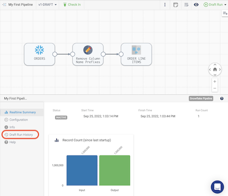
- On the Draft Run History tab, you can see the history of draft runs for the pipeline. On the most recent run, click on View Summary.

- In the pop-up window that appears, the Job Metrics Summary appears at the top, and Scroll Down to view the Snowflake Queries that are generated to populate the target table(s) as well as some logging.
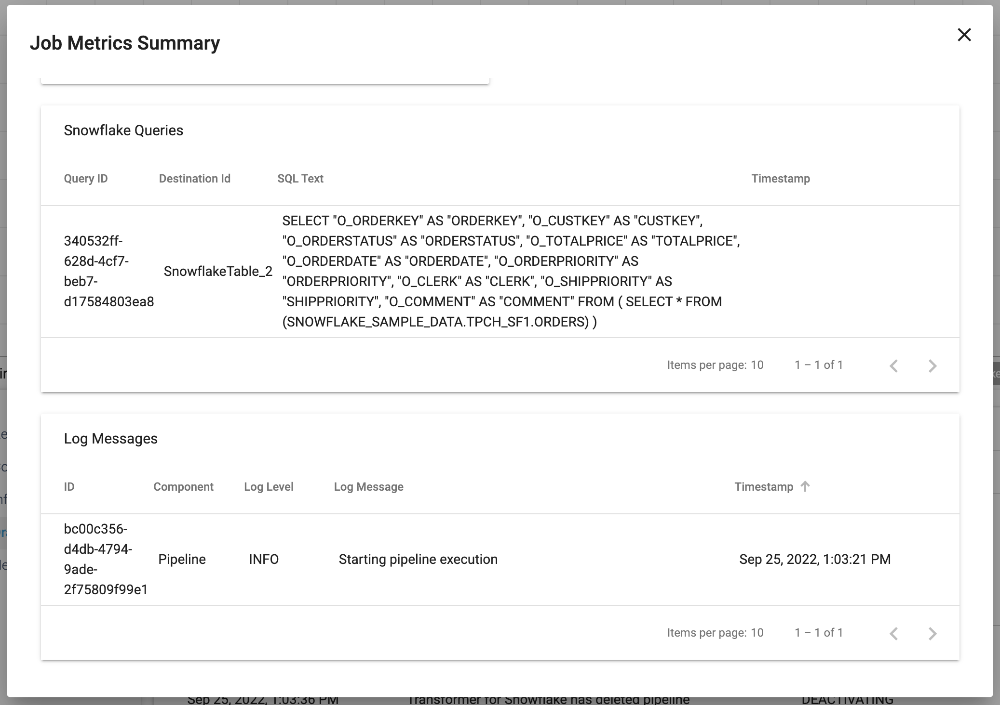
- Now let's take a look at what is happening in Snowflake. Go back to your Snowflake account, and under the Activity menu on the left, select Query History. By default, there will be a filter on your user. Since a new user was created for the Partner Connect integration, you will need to remove the User filter from the top right of the Query History window.Now Look for the
CREATE OR REPLACE TABLEstatement in the query history, and you can click on the SQL text to see the query Snowpark generated to create this table in Snowflake. Since we chose theOverwrite ModeofDrop Table, that is why aCREATE OR REPLACE TABLEstatement is used. If we had selected theTruncateoption, we would see aTRUNCATEstatement followed by anINSERTstatement that leverages the same subquery.

- Lastly, go to the Worksheets tab in Snowflake. Click on the plus (+) icon to create a new worksheet. Use the SQL below to run a couple queries on the table that was just created to see the number of rows in the new table as well as a sample of ten rows. Notice that the new table has the updated column names with the prefix removed.Note: If you named your tables differently than suggested, you will need to modify the query.
SQL
USE WAREHOUSE PC_STREAMSETS_WH; USE ROLE PC_STREAMSETS_ROLE; USE DATABASE PC_STREAMSETS_DB; USE SCHEMA PUBLIC; SELECT COUNT(*) FROM ORDER_LINE_ITEMS; SELECT * FROM ORDER_LINE_ITEMS LIMIT 10;
- Now that we successfully created and executed this simple pipeline, go back to StreamSets to continue developing.
- Want to download and import a copy of the pipeline build so far? Download it from github. Later in the lab, we'll go over the simple task of importing object, but you can find the documentation here.
Pipeline Publishing & Version Control
Now we are going to use StreamSets built-in version control to publish the pipeline we just created and start a new draft of the pipeline.
- In StreamSets, go back to the pipeline that was just created. You will still be in edit mode, so you should see the Check In button above the Canvas. Click on this and the Check In wizard will appear.

- In the Check In wizard, enter a commit message and choose Publish and Close.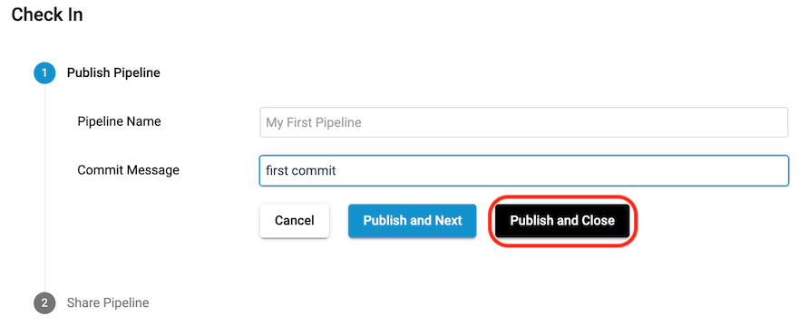
- Back in the design canvas, you are now viewing a read-only version of the pipeline. To create a new draft, click on Edit in the toolbar above the canvas.

Join Orders with Line Items
Let's continue on with our pipeline development. Now let's add LINEITEMS to the pipeline so that we can finish our ORDER_LINE_ITEMS table.
- There are a couple ways to add a new origin , but the quickest is to simply copy the origin we already created. Select the ORDERS stage, and choose the Copy icon from the pop-up menu above. A new origin will appear on the screen, with the default name Snowflake Table 1.
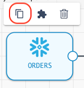
- Update the new origin stage Snowflake Table 1 with the following configurations:
- On the General properties tab, give it the name
LINEITEMS - On the Table properties tab, we can see that the settings from the Orders origin are pre-populated. This means that all we need to do is update the Table name to
LINEITEM, with this resulting configuration:

- On the General properties tab, give it the name
- Let's do the same column name transformations on the Line Items data, since all of the column names in this table begin with L_. You can see the column names from the table in Snowflake below.

- Add another Field Renamer to the canvas. Eventually, the Orders and Line Item data will be joined, so it would be good to add a meaningful prefix on the Line Item columns to indicate which table each column is from. Instead of the
L_prefix, the columns will be prefixed withLINEITEM_.
- Do this by clicking on the output node of the LINEITEM origin and use the Pipeline Creation Help Bar above the canvas to select a Field Renamer processor [or click on the Stage Panel Library on the right canvas to select a Field Renamer and connect the LINEITEM output to the new processor's input].
- Click on the new processor.
- On the General tab, set the Name to
Update Column Prefixes - On the Rename tab, update the following properties:
- Rename Type:
Find and replace in all fields by string - Match Pattern:
L_ - Replacement:
LINEITEM_
- Rename Type:
Calculate Unit Price, Discounts, and Tax
- Now that the column names are updated on the
LINEITEMtable, let's perform a few calculations that we want to see downstream in our analytics. We want to add some columns that calculate the unit base price per item, discounted price per item, total discount amount, and total sales amount.- We will use an Expression Evaluator to create new columns.
- Add an Expression Evaluator processor to the canvas after the Update Column Prefixes processor.
- Name the Expression Evaluator
Calculate Unit and Total Amounts. - Go to the Expressions tab.
- Now we want to add the following columns and accompanying calculations. Don't add this just yet!
Column name
Expression
unit_base_pricelineitem_extendedprice/lineitem_quantitydiscounted_unit_priceunit_base_price * (1 - lineitem_discount)total_discount_amount-1 * lineitem_extendedprice * lineitem_discounttotal_tax_amount(lineitem_extendedprice + total_discount_amount) * lineitem_taxnet_total_amountlineitem_extendedprice + total_discount_amount + total_tax_amount - When there is a lot of configuration that you want to copy/paste, you can often take advantage of
Bulk Edit Mode. This switches the individual configurations to a json blob where you can copy/paste JSON arrays.
- Copy the following
jsoninto the Bulk Edit text box - and be sure to include the brackets:[ {"fieldName": "unit_base_price", "expression": "lineitem_extendedprice/lineitem_quantity"}, {"fieldName": "discounted_unit_price", "expression": "unit_base_price * (1 - lineitem_discount)"}, {"fieldName": "total_discount_amount", "expression": "-1 * lineitem_extendedprice * lineitem_discount"}, {"fieldName": "total_tax_amount", "expression": "(lineitem_extendedprice + total_discount_amount) * lineitem_tax"}, {"fieldName": "net_total_amount", "expression": "lineitem_extendedprice + total_discount_amount + total_tax_amount"} ] The pipeline should now look like this: 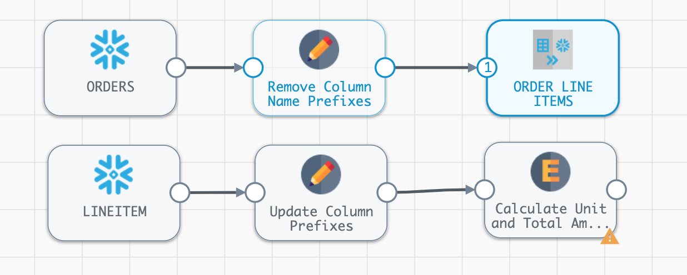
The pipeline should now look like this: 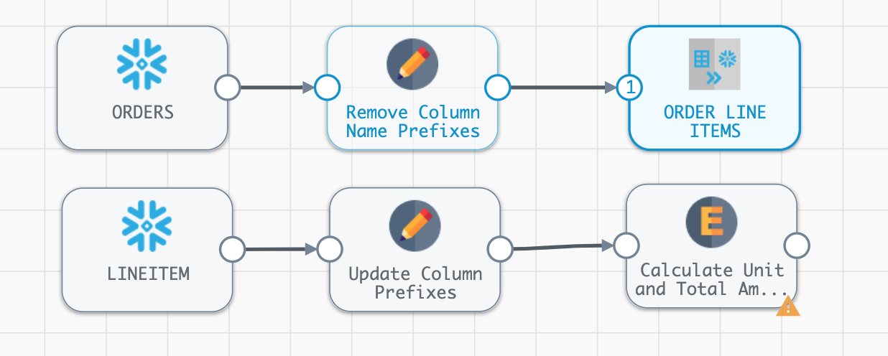
- We will use an Expression Evaluator to create new columns.
Join
- Now let's join these two tables together.
- Click on the line connecting the first Field Renamer [Remove Column Name Prefixes] to the Snowflake Table [ORDER LINE ITEMS] destination.
- On the Pipeline Creation Help Bar, select Join from the Select Processor to add in between the selected stream... drop-down.
- Now connect the second Field Renamer [Update Column Prefixes] to the Join stage just added, so that it has two inputs. Your pipeline should now look like this:

- Click on the Join stage, and name the processor
Order and Line Item Join.- On the Join properties tab below the canvas, we describe the join criteria. This is a very flexible processor as described in the documentation, so there are multiple join types to choose from and join conditions can be based on matching column names or the join clause can be written out in SQL.
- In this case, we will do an inner join on the
ORDERSandLINEITEMtables based on theORDERKEY. - Make sure that the stage has the settings below:
- Join Type:
Inner - Join Criteria:
Condition - Condition:
ORDERKEY = LINEITEM_ORDERKEY
- Join Type:
- Preview the pipeline to see if the pipeline changes have had the desired effect. Use the preview button (eye icon) on the right side above the canvas.
- Looking at the previews for the Field Renamer stages, we can see that all of the prefixes were removed or updated accordingly.
- The preview for the Join stage probably isn't showing any records. Why not?
- When using preview, the pipeline is randomly pulling the records from each of the sources, so in this case, there is no guarantee that they will have Order Keys that will overlap. That's ok, because we can use the Preview Where Clause to filter the records that are used for preview.
- In this case, we will filter on the Order Id so that we can match the line items to the order.
- Close the preview
- Update the preview filters on the Snowflake Table origins.
- Go to the ORDERS origin and open the Table properties tab. For the Additional Preview Where Clause, enter
O_ORDERKEY = 1 - On the LINEITEM origin, add
L_ORDERKEY = 1as the Additional Preview Where Clause.
- Go to the ORDERS origin and open the Table properties tab. For the Additional Preview Where Clause, enter
- Preview the pipeline again, and select the Join [Order & Line Item Join] processor. Now the processor is showing input and output where the Order and Line Item information have a matching order key.

Create an Order Summary Table
- Now create a Order Summary table that includes some of the calculations we just added. We want to get total gross sales amount, total discount amount, total tax amount, and total net sales amount for each order. We'll also create a column,
ORDER_COUNT, so that subsequent aggregations can use that to total orders.- To do this, add an Aggregate processor to the pipeline.
- Create a second output from the Join [Order & Line Item Join] processor by drawing a line from its output node to the input node of the Aggregate processor.
- Name the Aggregate processor
Aggregate Line Items. On the Aggregate properties tab, add the following fields under Aggregations (bulk edit option provided too):
JSON to copy/paste in Bulk Edit Mode:Aggregate Function
Aggregate Field
Output Field Name
SumLINEITEM_EXTENDEDPRICEGROSS_SALES_AMOUNTSumTOTAL_DISCOUNT_AMOUNTTOTAL_DISCOUNT_AMOUNTSumTOTAL_TAX_AMOUNTTOTAL_TAX_AMOUNTSumNET_TOTAL_AMOUNTNET_TOTAL_AMOUNTCount DistinctORDERKEYORDER_COUNT[ { "aggregateTypes": "SUM", "aggregateField": "LINEITEM_EXTENDEDPRICE", "outputField": "GROSS_SALES_AMOUNT" }, { "aggregateTypes": "SUM", "aggregateField": "TOTAL_DISCOUNT_AMOUNT", "outputField": "TOTAL_DISCOUNT_AMOUNT" }, { "aggregateTypes": "SUM", "aggregateField": "TOTAL_TAX_AMOUNT", "outputField": "TOTAL_TAX_AMOUNT" }, { "aggregateTypes": "SUM", "aggregateField": "NET_TOTAL_AMOUNT", "outputField": "NET_TOTAL_AMOUNT" }, { "aggregateTypes": "COUNT_DISTINCT", "aggregateField": "ORDERKEY", "outputField": "ORDER_COUNT" } ] - Set Group by Fields[1] to
ORDERKEY - The final properties should look like this: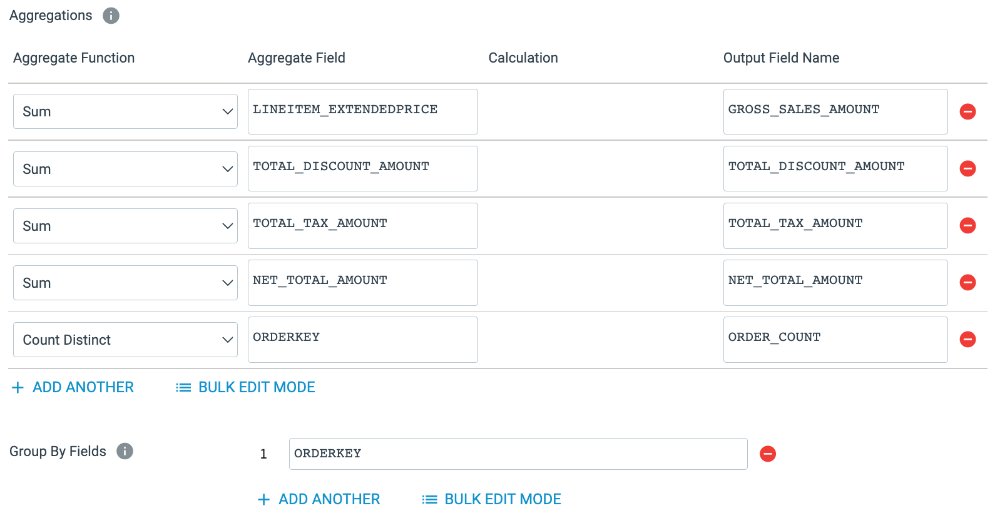
- Now add another Snowflake Table destination to the canvas, feeding it the output of the Aggregate processor.
- Name the destination
Order Summary - On the Table tab, specify the table name as
ORDER_SUMMARY - Select Write Mode:
Overwrite Table - Select Overwrite Mode:
Drop Table
- Name the destination
- The completed properties should look like this: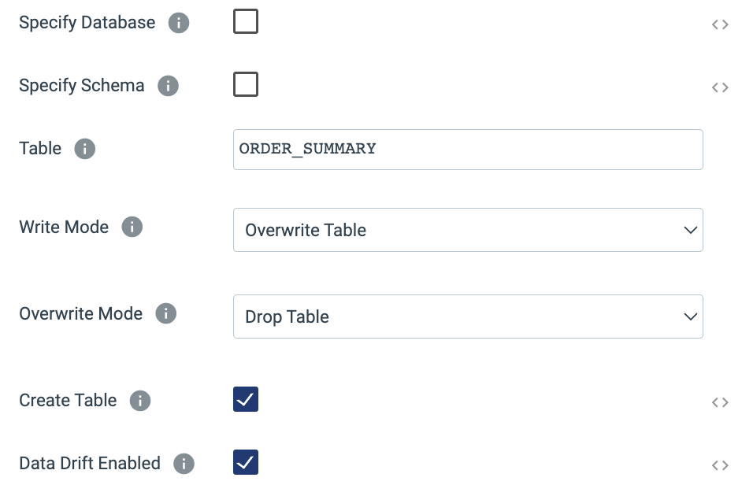
- Preview the Pipeline. Look at the output of the Expression Evaluator state to see the calculated columns.

- Look at the output of the Aggregate stage to see the aggregated Order Summary record.

Create Final Order Summary
- Now we want to join the summary data to the original orders data to create a table that has both the Order level details, such as
CUSTOMERKEY, and the totals derived from the Line Items.
- Start by adding another Join stage to the canvas using the Stage Library Panel on the right.
- Connect the output from the first Field Renamer [Remove Column Name Prefixes] processor as the input to the new Join
- Connect the output of the Aggregate processor to the join.
- Go to the processor configuration:
- Name the join
Order and Aggregate Join - On the properties Join tab:
- Join Criteria:
Matching Fields - Matching Fields[1]:
ORDERKEY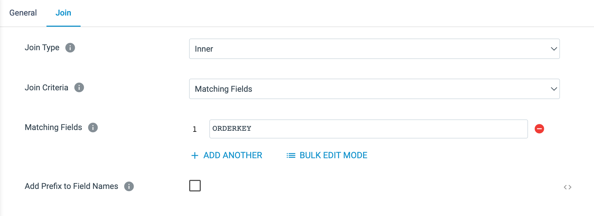
- Join Criteria:
- Name the join
- Now we will specify which table this data should be loaded to.
- Add a new Snowflake Table destination to the canvas.
- Connect the output of the Field Remover to its input.
- On the Table tab in the properties, specify the table name
ORDER_AMOUNTS - At this point, the pipeline should look something like this:

- Now preview the results, looking at each of the stages. If it would be helpful to see some more data in the preview, add another ORDERKEY to the the Preview Where Clause by changing them to
O_ORDERKEY IN (1,2)for the Orders table andL_ORDERKEY IN (1,2)for the Line Item table. - Once the pipeline has been previewed do a Draft Run on the unpublished pipeline. Go to your worksheet and run the following queries to see the output of the pipeline.
SELECT * FROM PC_STREAMSETS_DB.PUBLIC.ORDER_LINE_ITEMS LIMIT 10; SELECT * FROM PC_STREAMSETS_DB.PUBLIC.ORDER_SUMMARY LIMIT 10; SELECT * FROM PC_STREAMSETS_DB.PUBLIC.ORDER_AMOUNTS LIMIT 10; - Check in this version of the pipeline and enter a commit message. Choose
Save & Closefrom the Check In window. - A complete version of this pipeline can be found here on github.
In the previous step, we added an Expression Evaluator to the pipeline to calculate values like unit cost and unit discount amount. What if these calculations were already codified in Snowflake? Snowflake UDFs (User Defined Functions) make this possible. (At the time this lab was written) Snowflake supports UDFs written in Java, JavaScript, Python, and SQL, and Transformer for Snowflake supports the use of ALL of these. The only thing required is that your role has the USAGE privilege granted the function.
To make things even better, StreamSets allows the definition of Java UDFs within the pipeline. Defined at the pipeline level, a CREATE OR REPLACE FUNCTION statement will be executed with the provided code at pipeline runtime. Let's replicate one of the calculations from the Expression Evaluator [Calculate Unit and Total Amounts] to see this in action.
- Click on Edit above the canvas to create a new version of My First Pipeline.
- Click on a blank area of the canvas to see the pipeline-level configurations in the pane below (General | Parameters | Advanced tabs). Click on the Advanced tab.

- To add a UDF, click on + Add to the right of UDF Configs.
- We are going to create a simple UDF to calculate the discounted unit price, just to show another way that this logic can be applied. Enter the following configurations:
- UDF Name:
discounted_unit_price_java - Java Handler Function:
discounted_unit_price_java - Target Path for Jar:
@~/ - Java UDF Class Definition:
public class sales { public static double discounted_unit_price_java(double extended_price, double quantity, double discount_pct) { double discounted_unit_price = (extended_price / quantity) * (1 - discount_pct); return (discounted_unit_price); } }
- UDF Name:

- Now click on the Expression Evaluator [Calculate Unit and Total Amounts] and add a new column with the following settings:
- Output Field Name:
discounted_unit_price_udf_java - Expression:
discounted_unit_price_java(lineitem_extendedprice, lineitem_quantity, lineitem_discount)
- Output Field Name:
- Preview the pipeline to compare the results of
discounted_unit_priceanddiscounted_unit_price_udf_java.

- Check in your pipeline. You can download a completed copy of this pipeline here
Obviously this is a very simple example, but the ability to use any Snowflake UDF from a Transformer for Snowflake pipeline makes your pipelines even more powerful!
In the next part of the lab, we want to create a Pivot Table that can be used to support some analytics. Our goal for this portion is the lab is to create a table to support the analysis of monthly net sales by clerk. The desired output has rows for CLERKs, columns as Year/Month, and cell values as Net Sales Amount totals.
Instead of individually adding and configuring processors, we are going to use a pipeline fragment to create a Pivot Table to support our analytics.
A pipeline fragment is a stage or set of connected stages that you can use in other pipelines. Use them to easily add the same processing logic to multiple pipelines and to ensure that the logic is used as designed.
Download the pipeline fragment from github here that was created to implement this logic. This fragment has been fully parameterized, allowing you to fill in parameter values for the date, the date format to pivot on, the field you want to group by, the value to aggregate, and the table to populate. So this fragment could be used multiple times to create and populate different pivot tables by only changing the input parameters when adding it to the pipeline.
You can find out more about Pipeline Fragments in StreamSets Documentation.
Import a Pipeline Fragment
- Instead of creating this fragment from scratch, we will import it.
- If you haven't already, download the pipeline fragment from github.
- Click Build > Fragments in the Navigation panel, and then click the Import a Pipeline Fragment option at above the fragment list or the Import icon.

- On the pop-up window, use the following settings:
- Import file type:
Archive File(default) - Commit Message:
import - Browse File: use the download of pivot_fragment.zip.
- Import file type:
- Click on Import.
- Click on Close. Upon import, note that the fragment is already in the Published state, which means that it can be immediately used in pipelines. Just keep in mind that all fragments must be published before they can be added to a pipeline.
- Now you can see the Pivot Fragment in the Fragment list.
- Click on the Pivot Fragment to open the canvas. Let's take a closer look what it is doing.

- The purpose of this fragment is to create a pivot table with a summary of net sales by month for each clerk. Since this pivot table could be created for a variety of time increments, metrics, and groupings, it uses parameters to allow users to enter a few column names once instead of having to add and configure the needed processors each time. The fragment versions can then be centrally managed, and when new versions are published, the updates can be pushed to the pipelines with the fragment in use.
- In the configuration menu below the canvas, the fragment's parameters are visible. When using this fragment in a pipeline, these parameters can be changed for every instance of the fragment that is inserted. To reference a parameter in a processor configuration, use
${parameter name}. - The pipeline has 3 processors and 1 Snowflake Table destination.
- Parse Date Parts [Expression Evaluator Processor] - This stage parses the value in the
DATE_COLUMNusing the date format provided in theDATE_FORMAT_PATTERNstring.
- Keep Only Columns for Pivot [Field Remover Processor] - This processor limits the columns in its output using the
Keep Listed Fieldsoption, theTIME_PERIODfield created in the previous processor, and the columns specified as theAGGREGATE_COLUMNandGROUP_BY_COLUMN. The column name given forGROUP_BY_COLUMNhere determines which column the pivot table will group the rows by.
- Pivot [Pivot Processor] - This stage is where the magic happens!

- The Field to Pivot is set to be the
TIME_PERIODvalue created in the expression evaluator. This means that this is the value that will be turned into columns. - Autocalculate Pivot Values - When selected, StreamSets uses the distinct values from the Field to Pivot as the column names. When this option is not selected, the column names need to be manually entered, which is also required when writing a SQL query to create a pivot table. So if Autocalculate Pivot Values is used, now there is no need to track new values appearing in the Field to Pivot. StreamSets will automatically take care of making sure the appropriate column names are present.
- Field to Aggregate - This is the value that will be aggregated by whatever function is chosen in the below Aggregation setting. In this instance, we are simply doing a sum since we want to generate totals for each row in each time period.
- To put this into context, the SQL query for this pivot is shown below, and with the passage of time, the column names will need to be updated every month. The Pivot Processor, however, does this logic for you so that you can set it and forget it.
SELECT * FROM SOURCE_TABLE PIVOT( SUM(NET_SALES_AMOUNT) FOR TIME_PERIOD IN ('2022-01','2022-02' ,'2022-03','2022-04' ,'2022-05','2022-06' ,'2022-07','2022-08' ,'2022-09','2022-10' ,'2022-11','2022-12') ) AS P;
- To put this into context, the SQL query for this pivot is shown below, and with the passage of time, the column names will need to be updated every month. The Pivot Processor, however, does this logic for you so that you can set it and forget it.
- The Field to Pivot is set to be the
- Snowflake Target Table [Snowflake Table destination] - One thing to note about this Snowflake Table destination is that a parameter is being used to set the table name. This is something that can be done throughout StreamSets and makes it possible to create one pipeline that can use parameters to execute on different sources, targets, and/or using different values in the configurations.

- Parse Date Parts [Expression Evaluator Processor] - This stage parses the value in the
- Go back to Build > Pipelines and select the pipeline you were working on and open the canvas.
Use Fragment to create Pivot Table
- In the pipeline canvas for My First Pipeline, use the Stage library panel on the right. Click on the
Ain the top left of the panel produce a drop-down menu with the list of object types that can be added to the canvas. SelectFragmentsfrom the list. Now select the Pivot Fragment. A pop-up will appear to allow you to alter the prefix that StreamSets adds to the parameters for that fragment. Leave this unchanged and click on Done.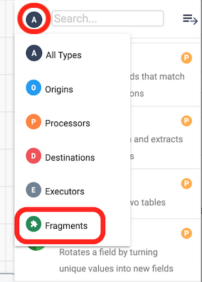- The fragment will now appear on the canvas.
- Connect the output of Order and Aggregate Join to the input of the Pivot Fragment.
- Click on the Pivot Fragment. On the General tab below, there is a property for the Fragment Commit/Tag, where the version of the fragment currently in use can be seen and changed with the drop-down menu of its versions. 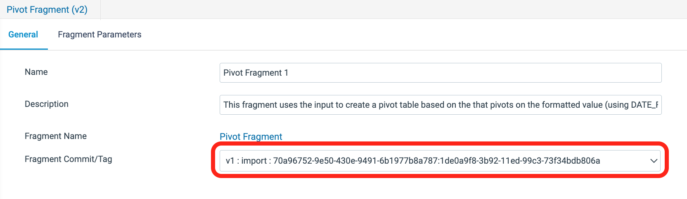
- The Fragment Parameters tab contains the parameters with the updated prefixes where the parameters have the default values assigned in the fragment.
- Now look at the pipeline parameters by clicking on an area of blank canvas to have the general pipeline properties appear below the canvas. On the Parameters tab, the parameters from the fragment were automatically added to this list as well, and pre-populated with the default values. The values for the fragment parameters can be updated in either place, and the new value will automatically be populated on both tabs.
- Start a Draft Run of the pipeline. Verify the creation of the ORDER_AMOUNTS table in Snowflake with the following query (query assumes all default values were used).
SELECT * FROM PC_STREAMSETS_DB.PUBLIC.PIVOT_SALES_BY_CLERK LIMIT 10; - An archive file with the completed pipeline can be found here.
Create & Run a Job
In this next step, we will create a StreamSets job instance, which is the execution of a published pipeline. A job instance can be created from a pipeline or a job template.
- Check in the pipeline.
- After entering the Commit Message, click on
Publish and Next. - Under Share Pipeline, select
Save and Next. - The Update Jobs section won't have any jobs listed, so click on
Save and Create New Job - A new pop-up window appears titled Create Job Instances.
- Leave the default job Name:
Job for My First Pipeline. - Click on
Next. - Under Select Pipeline, the name of the pipeline will appear, in this case
My First Pipelineas well as the pipeline version. Click onNext. - Now the Define Runtime Parameters section displays. This is where the default parameter values can be overwritten. For this case, the defaults will suffice. Click on
Save & Next. - Under Review & Start, it indicates that the job was successfully created. Click on
Start & Monitor Job.
View Running Job
- The system will show the pipeline canvas, but this is really a view of the job, as is indicated by the job name in the top left and the green
ACTIVEindicator.
- The job will complete shortly, and below the canvas, the Job Status tab will show the current job status, which is now
INACTIVE. It also shows the parameter values used for that instance of the job. - Click on the History tab below Job Status, and a summary of all the job runs is displayed. Click on View Summary....

- The Job Metrics Summary will appear and shows:
- The number of records read and written
- Scroll down to reveal the queries generated for each destination. The Destination Id shown is not the name given to the destination, but the Instance Name that can be found on the Info tab of every pipeline component.
- Scroll all the way to the bottom to see the Log history.

- The full lists of job instances, job templates, draft runs, can also be found under the Run tab on the left.
There is much more that can be done with jobs, such as scheduling them or triggering job runs via the Rest API. You can find more information in the Control Hub documentation here.
You can see that the NATION table in the SNOWFLAKE_SAMPLE_DATA database and TPCH_SF1 schema has a region assigned to each country. Over time, the company might add or change regions as they grow. For instance, there is only an America region, but eventually it might make sense to split that into North America and South America. For our reporting over time, however, we may want to preserve the historical nation to region mappings, so we want to capture this in a Slowly Changing Dimension.
- Go back to your Snowflake Worksheet and run the following
SQLqueries to create the tables for this portion of the lab. When you finish, you should have two new tables in thePC_STREAMSETS_DBdatabase andPUBLICschema:NATION_DIMENSIONandNATION_UPDATES.-- CREATE NATION DIMENSION FOR SCD PIPELINE CREATE OR REPLACE TABLE PC_STREAMSETS_DB.PUBLIC.NATION_DIMENSION AS SELECT N.N_NATIONKEY AS NATION_KEY, N_NAME AS NATION_NAME, R.R_NAME AS REGION_NAME, '2022-01-01T00:00:00Z'::TIMESTAMP_NTZ(0) AS START_TIMESTAMP, NULL::TIMESTAMP_NTZ(0) AS END_TIMESTAMP, 1::INTEGER AS VERSION, TRUE AS ACTIVE_FLAG FROM SNOWFLAKE_SAMPLE_DATA.TPCH_SF1.NATION N JOIN SNOWFLAKE_SAMPLE_DATA.TPCH_SF1.REGION R ON N_REGIONKEY = R.R_REGIONKEY; -- CREATE A TABLE FOR CHANGE DATA CREATE OR REPLACE TABLE PC_STREAMSETS_DB.PUBLIC.NATION_UPDATES ( NATION_KEY INTEGER, NATION_NAME VARCHAR, REGION_NAME VARCHAR, EFFECTIVE_DATE TIMESTAMP_NTZ(0) ); -- Insert Records into change data table INSERT INTO PC_STREAMSETS_DB.PUBLIC.NATION_UPDATES VALUES (2,'BRAZIL','AMERICA','2022-10-01T00:00:00Z') , (24, 'UNITED STATES','NORTH AMERICA','2022-09-01T00:00:00Z') , (25, 'AUSTRALIA','ANZ','2022-08-01T00:00:00Z') ; - Create a new pipeline by going to Build > Pipelines. Use the ➕ icon to create a new Transformer for Snowflake pipeline. 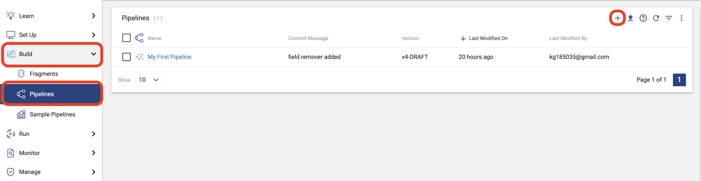
- Click on Use Transformer for Snowflake! Name your pipeline
My SCD Pipelineand click on Next. At the next prompt, chooose Save and Open in Canvas. - Check on the General and Parameters tabs below the pipeline canvas to make sure that your pipeline default values are populated. If not, enter them.
- Add a Snowflake Table origin to the canvas. Since we are using our default database and schema, all we need to do is add the table name to read from. Name the origin
Nation Dimension, and go to the Table tab to enter the following settings:- Table:
NATION_DIMENSION - Additional Preview Where Clause:
NATION_KEY IN (2,24,25)
- Table:
- While this origin is selected, use the Pipeline Creation Help Bar above the canvas to Select New Processor to connect.. and choose
Slowly Changing Dimension. If the Pipeline Creation Help Bar does not appear, you can select the SCD Processor from the Stage Library Panel, drag it onto the canvas, and connect your origin output as its input. - Add a second Snowflake Table origin to the canvas. Again, this table is in the default database and schema, so you only need to enter the table name to read from. Name the origin
Nation Updates, and then go to the Table tab to enter the following setting:- Table:
NATION_UPDATE
- Table:
- Connect the output of the Nation Update origin to the Slowly Changing Dimension processor. Your pipeline should now look like the image below. It is important which number each input is assigned to. Nation Dimension should be input
1and Nation Update should be input2. If the inputs are reversed, you can switch them by selecting the SCD processor and clicking on the button with the up and down arrows.

- Now it's time to configure the processor. Make sure that the SCD processor is selected, and on the Dimension configuration below, enter the following settings:
- SCD Type:
Type 2 - Key Fields[1]:
nation_key - Specify Version Field: ✓
- Version Field:
version
- Version Field:
- Active Flag Type: ✓
- Specify Timestamp Fields: selected
- Start Timestamp Field:
start_timestamp - End Timestamp Field:
end_timestamp - Calculated Timestamp Field:
effective_date
- Start Timestamp Field:
- Behavior for New Fields:
Remove from change data[default]
- SCD Type:
- Let's take a closer look at some of these settings:
- SCD Type: Currently Type 1 and Type 2 dimensions are supported.
- Key Fields: You can specify the fields that uniquely identify each dimension record. Columns not included as a key or in the settings below will be considered when comparing existing dimension records to new data.
- Specify Timestamp Fields:
- Calculated Timestamp Field: This option allows you to use a timestamp from the changed data set as the value for the Start Timestamp on the new or updated record and the End Timestamp on the record to be expired.
- Behavior for New Fields - this setting determines what will happen when a column exists in the change data but not the dimension table.
- Remove from change data - The processor will ignore additional column(s) and drop any data from the change data set in a column that does not exist in the dimension.
- Keep for newest records and set to null for previous records - The processor will pass the new column from the change data to the rest of the pipeline. This means that if Data Drift Enabled is selected in your table destination, the new column will be created in the target table.
- Now we will add a Snowflake Table Destination to complete the pipeline.
- Connect the output of the Slowly Changing Dimension processor to a Snowflake Table destination (that needs to be added to the canvas).
- Name the destination
Nation Dimension Destination - Choose the following settings on the Table tab:
- Table:
NATION_DIMENSION - Write Mode:
Propagate updates from Slowly Changing Dimensions - Create Table: Unchecked
- Data Drift Enabled: ✓
- Table:
- The Table tab should look like this:

- What does it mean to
Propagate updates from Slowly Changing Dimensions?- The Slowly Changing Dimension processor produces a record for every
INSERTandUPDATEthat is needed. So for example, when a nation's region changes, the processor generates one output that updates the fields to expire the old record and a second output for the new version of the record. Using this option on StreamSets' Snowflake Table destination means that StreamSets will generate theMERGEstatement needed to process all of the updates automatically.
- The Slowly Changing Dimension processor produces a record for every
- The completed pipeline should look like this:

- Now Preview the pipeline. On the Preview Configuration screen, keep the options to Show Record/Field Header and Write to Destinations unselected. Let's step through the output of the preview:
- On the
Nation Dimensionorigin, we can see two records from the existing dimension, the records forBraziland theUnited States.
- On the
Nation Updateorigin, there are three records from the change data, the records forAustralia,Brazil, and theUnited States. In this preview, the record for theUnited Stateshas a new region, theBrazilrecord is unchanged, and there is a new record to addAustralia.
- On the
Slowly Changing Dimensionprocessor, there are 5 input records and only 3 output records. Let's step through each one.
- Nation_Key
2:BrazilThere was no change to this record in the update data, so no action needs to be taken and the record is ignored - Nation_Key
24:United StatesThe update data contains a new region,North America, versus the existing dimension record that hasAmericaas the region. The processor then generates 2 records.- 1 - Expires old record. The original dimension record is updated to set the
ACTIVE FLAGtoFALSEand set theEND_TIMESTAMPto theEFFECTIVE_DATEof the updated record. The__SS_META_OPERATIONand__SS_META_KEYSare columns generated by StreamSets that will NOT appear in the final data, but are metadata that the destination processor uses. - 2 - Generates new record. This record contains the new region value. The version of the record is incremented from the old record, the
ACTIVE_FLAGis set toTRUE, and theSTART_TIMESTAMPto the value of theEFFECTIVE_DATE
- 1 - Expires old record. The original dimension record is updated to set the
- Nation_Key
25:AustraliaThis record does not exist in the current dimension table, so a new row will be created as Version 1 of the record.
- Nation_Key
- On the
- Close the preview. Do a Draft Run of the pipeline and go back to Snowflake and continue with the previous worksheet and run the following SQL statement:
SELECT * FROM PC_STREAMSETS_DB.PUBLIC.NATION_DIMENSION WHERE NATION_KEY IN ('2','24','25') ORDER BY NATION_KEY, START_TIMESTAMP;
The query results show the active and inactive dimension records for the three example nations that were processed by the pipeline as show below.

- You can download a completed version of the pipeline here.
Thank you for participating in this Hands on Lab!

What We Covered
- How to create your own StreamSets instance using Snowflake Partner Connect
- How to create, preview, and run Transformer for Snowflake pipelines
- How to use fragments to minimize your development efforts
- How to process data in a Slowly Changing Dimension
- How to create and execute jobs
Ready to learn more?
- Schedule a live Demo that includes more on StreamSets including the Data Collector engine!
- Download the Data Engineers Handbook for Snowflake
- Watch the webinar End-to-End Data Integration for Snowflake with Snowpark
- Go to StreamSets Academy for free self paced lessons to learn more!